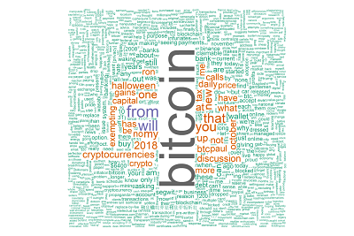

Bitcoin Wallet Address Score Check
Our bitcoin address checker allows you to quickly see a rating for any bitcoin address.
Some of the most interesting addresses are shown below if you want to check them out.
- A1zP1eP5QGefi2DMPTfTL5SLmv7DivfNa - First Address, this address received the first 50 BTC block reward.
- 14rE7Jqy4a6P27qWCCsngkUfBxtevZhPHB - Silkroad Coins, seized coins from Silkroad were held in this address.
- 3D2oetdNuZUqQHPJmcMDDHYoqkyNVsFk9r - Bitfinex, this is the address of the exchange Bitfinex, so although this is one address the balance is held by many many people.
You can learn more about the breakdown of bitcoin addresses from Cryptocanuks.
Maybe you are looking to send bitcoin to a new recipient or are about to setup a new connection but want to be sure you are sending it to a trust worthy partner? This bitcoin address checker will lookup the selected bitcoin address and review multiple factors to give an overall wallet score. Taking into account the account balance, the amount sent, the amount received, the number of transactions and other factors this address checker will help you to know if the address you are planning to send to is the correct one.
By looking at the data recorded in the bitcoin blockchain we can start to understand the different types of addresses. A large e-commerce company, receiving a high volume of payments, a personal wallet used by someone beginning to learn more about bitcoin or maybe a large exchange, transferring a high volume of bitcoin everyday.

Giving a bitcoin wallet rating out of 10 we hope that it can help you to confirm that it is the correct address you are looking for. We also give some additional insights to help you know a bit more about the person or company you are dealing with. You might even see your most recent transaction appearing as the most recent transaction of that wallet. With more and more people creating bitcoin wallets and little to make it easy to identify them you could end up struggling to know if the address you have noted down is the right one. If you know that the bitcoin address you are sending your cryptocurrency to is very active or has only ever had 1 or two transactions you can then compare with what we have to check you are sending to the right address.
Of course bitcoin wallets can change hands, it would be unusual but one person could give their wallet details to another, or have them stolen and the wallet taken over. Another thing to keep in mind would be that even if the wallet has a low score this may not be an issue, many people have multiple wallets, and perhaps the wallet owner has just began to use this bitcoin address more often.
Over time as you build up more transactions and interact with different bitcoin addresses your wallet score will increase. An inactive wallet that has not had a transaction in sometime will see it's bitcoin wallet address score dropping. The bitcoin transaction time shown above will not be exact but should be within 1 or 2 hours of the actual transaction time. This is as a result of taking the timestamp from the connected nodes and setting this as the timestamp for the block. The timestamp must greater than the medium of the previous 11 blocks and no more than 2 hours over the network adjusted time. The number of transactions includes all in and out transactions. Some addresses may have a large volume of transactions but a lower wallet score, part of this could be that the wallet is only sending a lot of bitcoin transactions or only receiving a large volume of transactions. The wallet balance is shown in full Bitcoins and not Satoshis but in time this could become more common. Unconfirmed transactions are not included in this total.